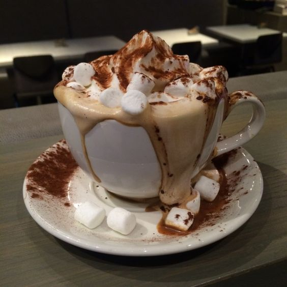

The Best Hot Cacao

Introduction
As early as 500 BC, the Mayans were drinking chocolate made from ground-up cocoa seeds mixed with water, cornmeal, and chili peppers (as well as other ingredients). They would mix the drink by pouring it back and forth from a cup to a pot until a thick foam developed, and then enjoy the beverage cold. For me, hot cacao is best in cold weather, however, I try to make my hot cacao just as rich & flavorful as theirs was.
Ingedients
Prep Time: 5 mins Cook Time: 5 mins Total Time: 10 mins Servings: 3
- ¼ cup cacao
- ⅓ or ½ cup sugar (granulated or brown)
- 1 pinch of salt
- 1 pinch of cinnamon
- 1 pinch of chilli pepper flakes
- 1 star anise
- ⅓ cup water
- 3 or 4 cups of milk
- Whipped cream, marshmallows, crushed peppermint (any toppings optional)
Instructions
- Mix the dry ingredients in a small pot.
- Add water first and boil/simmer at around 100°C until the cacoa dissolves, stir with spatula and crush cacao against the side of the pot.
- Add the milk and stir till hot.
- Strain and serve.
- Add toppings (optional)